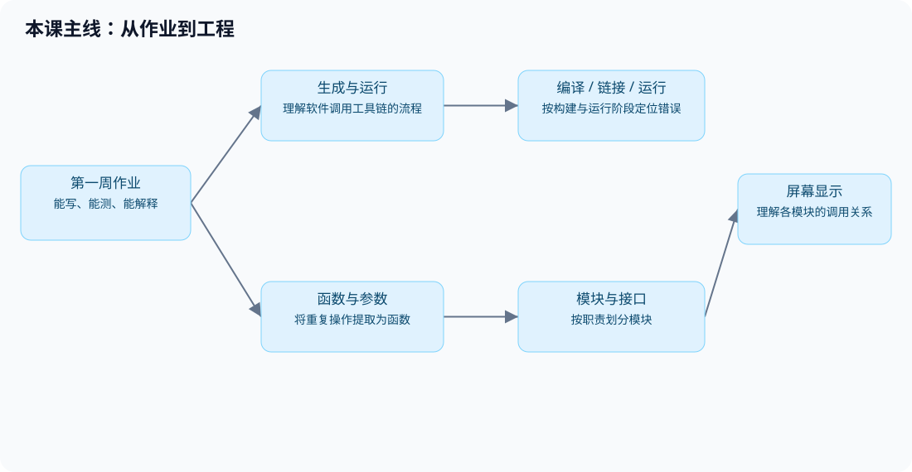
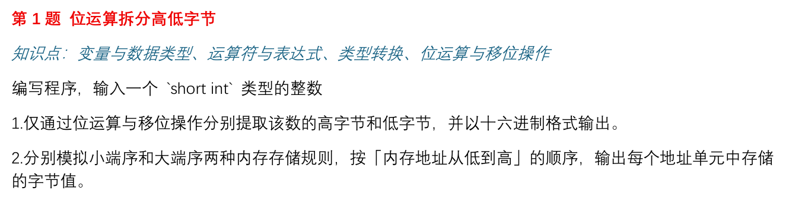
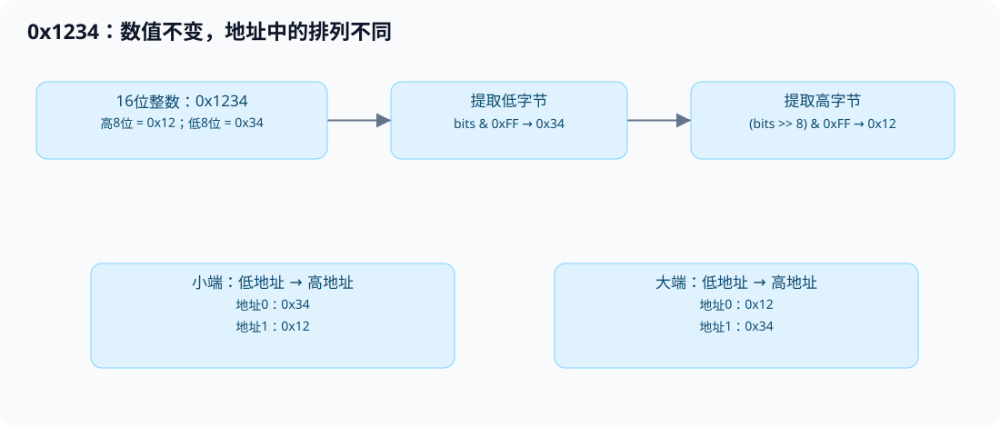
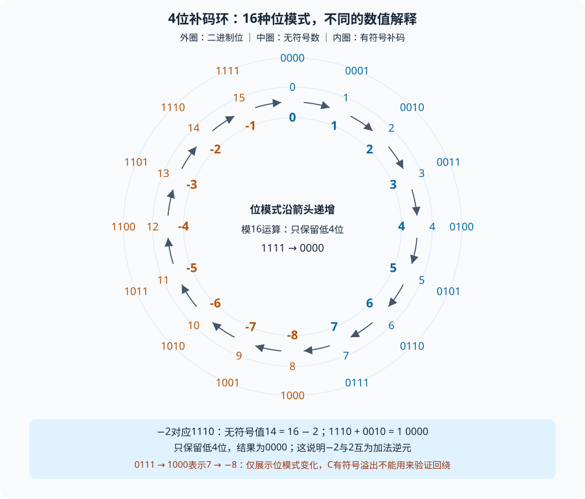
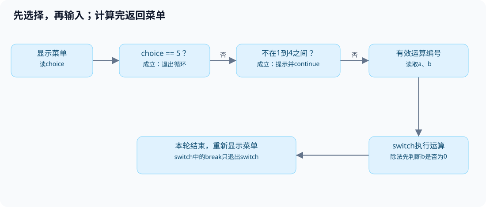
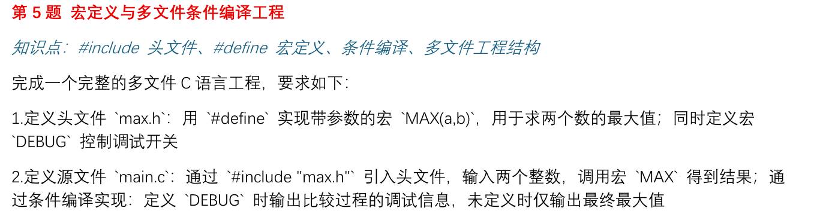
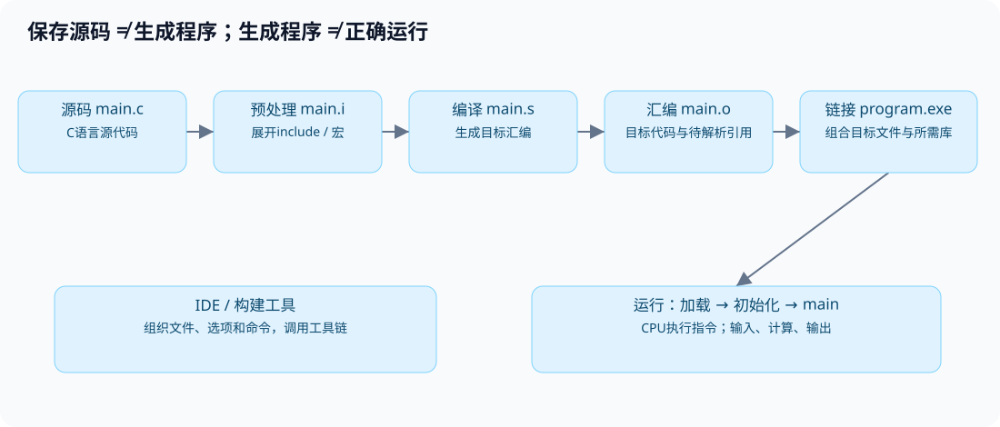
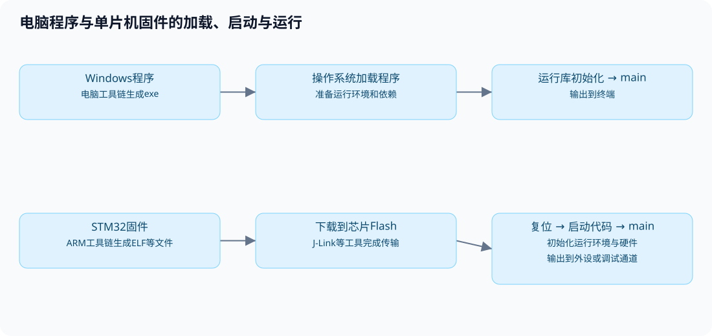
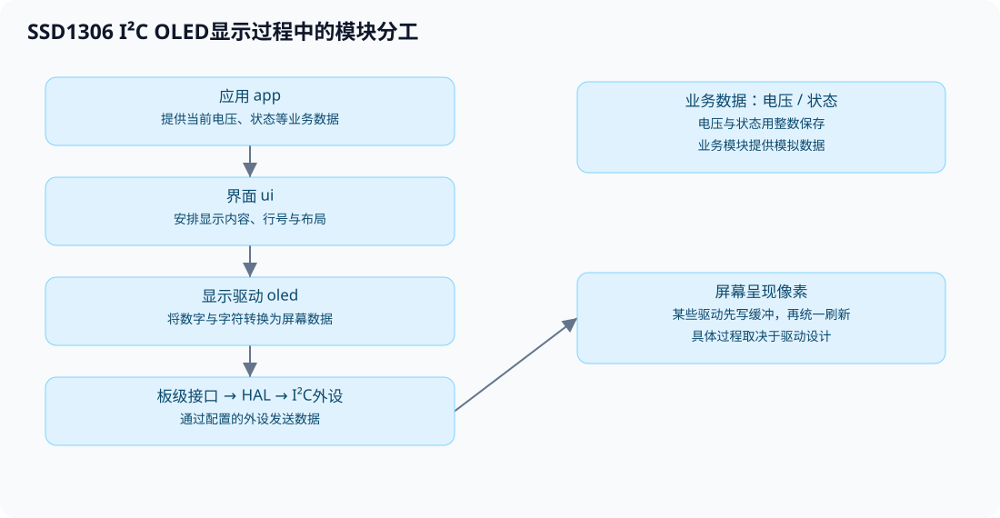

第二次培训：第一次作业讲评与模块化工程
苍穹战队 · 电控组培训｜第一周作业讲评 / 第二周函数与模块化
学习目标
在基本语法、流程控制和预处理的基础上，进一步学习函数、数组与模块化。屏幕案例从函数接口和调用顺序入手，理解各模块的职责。
学习内容包括五题作业的实现思路、程序错误的定位方法、函数的提取与复用，以及屏幕显示过程中的模块分工。

完整源码见逐句注释标准答案。下载标准答案与示例源码，解压后可以按下文的目录和命令编译。
第一部分：作业讲评与程序如何运行
1. 第1题：位运算拆分字节与大小端

题意：输入一个short int，用位运算提取高低字节，并按地址从低到高模拟两种排列。以下说明以一个字节8位、short占16位的环境为例。
一个16位整数可以分为高字节和低字节。例如，0x1234的高字节是0x12，低字节是0x34。大端与小端描述的是这两个字节在内存中的排列顺序，需要区分数值的高低位和内存地址的高低。
short int number; /* 保存输入的short整数。 */
unsigned short bits; /* 保存无符号数值，用于移位。 */
unsigned char high, low; /* 分别保存两个字节。 */
scanf("%hd", &number); /* %hd对应short；传入变量地址。 */
bits = (unsigned short)number; /* 先转无符号，避免负数右移差异。 */
low = bits & 0xFF; /* 保留低8位，其他位清零。 */
high = (bits >> 8) & 0xFF; /* 原高8位移到低位，再取出。 */
以上代码展示字节提取的主要步骤，完整答案还会检查scanf的返回值，确认输入成功。0xFF的低8位都是1，与它进行按位与运算可以保留低8位。%02X用于输出大写十六进制数，不足两位时在前面补0；需要显示0x前缀时，应在格式字符串中写出。

按low, high的顺序输出，可以模拟小端排列；按high, low的顺序输出，可以模拟大端排列。输出顺序由代码指定，不能据此判断本机实际采用哪种内存排列。
| 输入 | 转换后的16位值 | 高字节 | 低字节 |
|---|---|---|---|
| 4660 | 0x1234 | 0x12 | 0x34 |
| 0 | 0x0000 | 0x00 | 0x00 |
| -2 | 0xFFFE | 0xFF | 0xFE |
负数转换成unsigned short，在本环境按模65536得到无符号值；可避免直接对负数右移产生的实现差异。输入应在short范围内。
bits & 0xFF00可以保留高8位，但这些位仍在原来的位置。例如，0x1234 & 0xFF00得到0x1200，还需要右移8位才能得到0x12。
常见数据类型在内存中的存储
变量的值以二进制形式保存在内存中。内存按字节编址，每个字节都有对应的地址。一个变量占用多个字节时，这些字节在变量内部连续存放。数据类型决定占用空间，以及这些二进制位如何被解释。
在常见Windows GCC/MinGW和STM32开发环境中，一个字节为8位，常用类型的大小如下：
| 类型 | 常见大小 | 存储说明 |
|---|---|---|
char |
1字节 | 保存字符编码或一个小整数；普通char是否有符号取决于编译器配置 |
unsigned char |
1字节 | 8位无符号整数，范围为0～255 |
short |
2字节 | 常见为16位有符号整数 |
int |
4字节 | 常见为32位有符号整数 |
unsigned int |
4字节 | 常见为32位无符号整数 |
float |
4字节 | 常见采用IEEE 754单精度浮点表示 |
double |
8字节 | 常见采用IEEE 754双精度浮点表示 |
以上大小是这些环境中的常见配置，不是所有C平台都固定如此。C规定sizeof(char)为1，其他类型的实际大小可以用sizeof查看。sizeof的结果以字节为单位，使用%zu输出；以下代码按C99及更新的标准编译。
printf("char：%zu字节\n", sizeof(char)); /* 查看char类型占用的字节数。 */
printf("short：%zu字节\n", sizeof(short)); /* 查看short类型占用的字节数。 */
printf("int：%zu字节\n", sizeof(int)); /* 查看int类型占用的字节数。 */
printf("float：%zu字节\n", sizeof(float)); /* 查看float类型占用的字节数。 */
printf("double：%zu字节\n", sizeof(double)); /* 查看double类型占用的字节数。 */
整数的字节排列
以32位的int number = 0x12345678;为例，数值可以拆成12、34、56、78四个十六进制字节。每两位十六进制数对应一个8位字节。假设变量从地址0x1000开始，排列如下：
| 地址 | 小端存储 | 大端存储 |
|---|---|---|
0x1000 |
0x78（最低字节） |
0x12（最高字节） |
0x1001 |
0x56 |
0x34 |
0x1002 |
0x34 |
0x56 |
0x1003 |
0x12（最高字节） |
0x78（最低字节） |
地址用于表示存储位置，数值用于表示变量内容。上表中的地址只是示例，不代表程序实际分配的地址。大小端改变的是字节排列，同一个整数的数值含义保持不变。
有符号整数与无符号整数
无符号整数的所有位都用于表示非负数。32位unsigned int的范围为0～4294967295。常见的32位int采用补码表示，范围为−2147483648～2147483647。
在补码表示中，正整数按通常的二进制方式存储。例如，32位整数2表示为0x00000002。负整数可以通过“对应正数按位取反，再加1”得到：2按位取反得到0xFFFFFFFD，再加1得到0xFFFFFFFE，这就是−2的32位补码。小端存储时，其字节从低地址到高地址依次为FE FF FF FF。
同样的二进制位可能表示不同的数值。0xFFFFFFFE按32位有符号补码整数解释时是−2，按32位无符号整数解释时是4294967294。因此，理解数据时需要同时知道位内容和数据类型。
用环形图理解补码
用4位整数作为简化模型，可以得到16种位模式，从0000到1111。将它们按顺序排成圆环，沿箭头前进一格相当于位模式加1。只保留低4位时，1111再加1得到0000，因此形成一个模16的循环。

无符号解释将16种位模式依次对应到0～15。有符号补码解释则将0000～0111对应到0～7，将1000～1111对应到−8～−1。最高位为1时，有符号数值等于对应无符号值减16。例如，1110的无符号值是14，按补码解释为14 − 16 = −2。
补码表示使负数可以作为正数的加法逆元。例如，2的位模式为0010，−2的位模式为1110，两者相加得到1 0000。只保留低4位后为0000，对应结果0。对0010按位取反得到1101，再加1得到1110，也能求出−2的补码。
32位整数采用相同的关系，只是位模式数量变为2³²。负数−2对应的无符号值为2³² − 2，即4294967294，位模式为0xFFFFFFFE。最高位为1的32位补码，数值等于对应无符号值减2³²。
环形图用于说明固定宽度的位模式与补码编码。在C中，无符号整数运算按模运算回绕；有符号整数溢出属于未定义行为，不能认为int的最大值加1一定得到最小值。图中的7到−8展示编码相邻关系，不是允许程序执行有符号溢出。
字符与浮点数
字符也通过整数编码存储。在常见ASCII兼容环境中，char letter = 'A';保存的编码值是65，对应十六进制0x41。字符'1'的编码是49，与整数1不同。
浮点数使用不同的编码规则。常见32位float由1位符号、8位指数和23位尾数字段组成，用于表示小数及较大的数值范围。整数1的32位表示是0x00000001，而IEEE 754格式的1.0f表示是0x3F800000。它们的数值都为1，但类型和存储内容不同。
浮点数的精度有限，部分十进制小数无法精确表示。因此，浮点运算结果可能出现微小误差，不能把所有小数都当作精确值处理。
数组的连续存储
数组中的元素具有相同类型，并按下标顺序连续存放。例如，int values[3] = {120, 1, 35};在int占4字节的环境中共占12字节。如果第一个元素从0x1000开始，后两个元素分别从0x1004、0x1008开始。数组元素的先后顺序由下标决定，每个元素内部的字节顺序由大小端决定。
2. 第2题：素数判断与每行5个
题意：输出100到200之间全部素数。程序分为素数判断和输出排版两部分。素数标志记录当前数的判断结果，计数器记录已经输出的素数数量，两者分别使用变量保存。
int count = 0; /* 统计已输出素数。 */
for (int number = 100; number <= 200; number++) { /* 枚举候选数。 */
int is_prime = 1; /* 每个新数重新假设是素数。 */
for (int divisor = 2;
divisor * divisor <= number; divisor++) { /* 试除到平方根。 */
if (number % divisor == 0) { /* 找到能整除的因数。 */
is_prime = 0; /* 标记为合数。 */
break; /* 只退出试除循环。 */
}
}
if (is_prime) { /* 没找到因数，才输出。 */
printf("%d ", number); /* 输出当前素数。 */
count++; /* 只有输出时才增加。 */
if (count % 5 == 0) { /* 第5、10、15……个后换行。 */
printf("\n");
}
}
}
试除范围从2开始，到候选数的平方根结束。若n = a × b，则a和b不可能同时大于n的平方根，否则乘积会大于n。因此，合数至少有一个因数不超过平方根，在这个范围内找到因数就可以判定它是合数。1和候选数自身不用于这一步判断。
正确结果是21个素数，前四行各5个，最后一行只有199：
101 103 107 109 113
127 131 137 139 149
151 157 163 167 173
179 181 191 193 197
199
完整答案会在最后一行不足5个时补上换行。is_prime只记录当前候选数的判断结果，所以每次检查新数时都需要重新设置。count记录累计输出数量，应在外层循环之前初始化；如果每轮都将它设为0，就无法累计到5。
3. 第3题：菜单计算器与控制流
题意：菜单反复显示；1到4输入两数计算，5退出；非法菜单编号报错并返回菜单。程序先判断菜单编号，再决定是否读取操作数，最后执行对应运算。

if (choice == 5) { /* 先退出，不再输入操作数。 */
break; /* 此处退出外层菜单循环。 */
}
if (choice < 1 || choice > 4) { /* 1到4以外不是运算编号。 */
printf("输入错误，请重新选择\n");
continue; /* 跳过本轮，重新显示菜单。 */
}
scanf("%d %d", &a, &b); /* 只有有效运算编号才读两数。 */
switch (choice) { /* 分派对应的运算。 */
case 1:
printf("结果：%d\n", a + b);
break; /* 此处只退出switch。 */
case 4:
if (b == 0) { /* 除数为0时不能执行a/b。 */
printf("除数不能为0。\n");
} else {
printf("结果：%d\n", a / b); /* 两个int执行整数除法。 */
}
break;
}
片段只展示加法、除法，完整答案包含四个分支及输入检查。do-while先执行再判断，因此至少显示一次菜单。do-while语句的末尾需要分号。
| 语句位置 | 实际作用 |
|---|---|
在菜单循环中、switch之外的break |
退出最近的循环 |
case里的break |
退出最近的switch，菜单循环继续 |
本例的continue |
跳过本轮余下内容，检查循环条件后继续 |
17 / 8是2，-17 / 8是-2，向零截断。整数除数为0时，除法运算没有有效结果，执行它可能造成程序异常。本例假定输入和结果都在int范围内，遇到非数字输入会提示后结束。
验证时应分别检查退出、非法编号、四种运算和除数为0的情况。例如，输入5应直接退出，输入9应提示错误，选择加法并输入17和8应得到25。连续选择不同运算，还可以检查菜单是否正常重复显示。
4. 第4题：空心三角形的行列判断
题意：3到20行的空心直角三角形。本答案选择左下直角，镜像或旋转不改变题目的核心要求。
for (row = 1; row <= n; row++) { /* 逐行打印，共n行。 */
for (column = 1; column <= row; column++) { /* 第row行有row列。 */
if (column == 1 || column == row || row == n) {
printf("*"); /* 左边、斜边或底边。 */
} else {
printf(" "); /* 内部空心位置。 */
}
}
printf("\n"); /* 一行结束才换行。 */
}
以第4行、总行数5为例：第1列在左边，第4列在斜边，第2、3列是内部空格。到第5行，row == n成立，因此整行都是星号。
* 第1行：1列
** 第2行：2列
* * 第3行：3列
* * 第4行：4列
***** 第5行：底边全满
可以用3、5、20分别检查最小行数、普通输入和最大行数。检查内容包括总行数、每行列数、内部空格和底边。合法范围应写成n >= 3 && n <= 20，通过&&连接两个条件。3 <= n <= 20在C中不能表示这个区间。
5. 第5题：宏、头文件和条件编译

题意：max.h提供MAX(a,b)与DEBUG，main.c调用宏；调试版输出比较过程，普通版仅输出最终最大值。
/* max.h：头文件保护防止重复包含。 */
#ifndef MAX_H
#define MAX_H
#define MAX(a, b) (((a) > (b)) ? (a) : (b)) /* 每个参数及整体加括号。 */
#define DEBUG /* 注释本行可关闭调试。 */
#endif
maximum = MAX(a, b); /* 宏展开后计算最大值。 */
#ifdef DEBUG /* 已定义DEBUG才保留下列代码。 */
printf("正在比较%d与%d\n", a, b);
#endif
printf("最大值：%d\n", maximum); /* 两种模式都输出最终结果。 */
#ifdef发生在编译前，不是程序运行时的if。#define DEBUG 0仍然定义了这个宏，不能关闭#ifdef DEBUG；要注释或删除定义。完整答案区分大于、小于、相等，并在普通版中取消输入提示。
宏定义中的括号用于保证表达式的运算顺序。例如，整体括号使2 * MAX(2, 3)先求最大值，再乘2；参数括号使MAX(2 + 3, 4)中的2 + 3作为完整表达式参与比较。宏通过文本替换展开，同一个参数可能被计算多次，因此应避免传入a++、b++等会修改变量的表达式。
修改头文件后，需要重新编译再运行。关闭DEBUG后仍出现调试信息时，应检查构建是否成功，以及编译和运行的文件路径是否对应。
6. 作业中的常见错误
遇到错误时，可以从语法与构建、数据与判断、流程与结果三方面逐步检查。
| 错误写法 / 现象 | 原因 | 检查方法 |
|---|---|---|
short n; scanf("%d", &n); |
%d需要int对应的存储位置，与short不匹配，可能覆盖邻近内存 |
short用%hd，int用%d |
scanf("%hd", n); |
缺&，传入了值而不是目标地址 |
scanf需要接收变量地址，才能把输入写入变量 |
int count; count++; |
自动局部变量未初始化，初值不保证为0 | 首次使用前显式初始化 |
| 每检查一个数都没有重置素数标志 | 上一个候选数的结论影响下一个 | 标志在外层每轮初始化 |
每遇到合数也检查count % 5 == 0并换行 |
计数未变仍反复满足条件，出现空行 | 换行判断紧跟素数输出 |
if (3 <= n <= 20) |
实际先计算3 <= n得到0或1，再与20比较 |
使用n >= 3 && n <= 20 |
if (n < 3, n > 20) |
逗号表达式最终采用右侧结果，不表示“或” | 使用n < 3 || n > 20 |
case漏break |
会继续执行后面的分支 | 跟踪一次选项的实际路径 |
除法检查放在break之后 |
那段代码不会执行到 | 判断必须发生在除法之前 |
所有结果都放在#ifdef DEBUG里面 |
关闭调试后没有正常输出 | 最终结果放在条件编译之外 |
| 只交exe或运行旧exe | 无法验证当前源码是否能产生该程序 | 保存、编译、确认输出路径、再运行 |
例1：未初始化的计数器。未初始化的局部变量count不保证等于0。一次运行看似正常，也不能证明代码可靠；使用前应显式初始化。
例2：范围判断。3 <= 2 <= 20会先计算3 <= 2，得到0，再计算0 <= 20，最终结果为真。使用n >= 3 && n <= 20，才能要求两个范围条件同时成立。
例3：除零。执行整数除法前，应先判断除数是否为0。系统异常弹窗属于运行阶段的问题，不是编译失败；Windows上的0xC0000094是整数除零异常表现之一。
case里的变量声明：需要声明局部变量时，给分支加花括号可以明确作用域，也兼容较旧的C编译环境。标签后能否直接接声明，取决于所用的C标准及编译器。
case 1: { /* 用代码块形成该分支作用域。 */
int result = a + b; /* 在块内声明变量。 */
printf("%d\n", result);
break;
}
提交前检查：源码能独立编译；日志警告已检查；边界输入已测；正常和DEBUG关闭状态均测试；五题分目录，源码、依赖头文件与exe对应。测试输入应覆盖不同分支和边界情况。
7. C程序的构建过程
.c文件保存的是C语言源代码。CPU执行的是机器指令，因此源代码需要经过工具链处理。常见构建过程包括预处理、编译、汇编和链接，最终生成目标平台可以执行的程序。

| 阶段 | 处理内容 | 输出结果 |
|---|---|---|
| 预处理 | 处理#include、宏、条件编译 |
.i：宏已展开、被排除分支已消失 |
| 编译 | 分析C语法与类型，转换为目标代码表示 | .s：目标平台汇编文本 |
| 汇编 | 把汇编转成目标文件 | .o或.obj，仍可能有待解析的引用 |
| 链接 | 组合目标文件与所需库，解析符号等 | Windows exe，或嵌入式ELF/AXF等 |
头文件通常保存函数声明、宏和类型定义。通过#include包含头文件后，当前源文件可以使用这些声明和定义。例如，stdio.h提供printf等函数的声明，函数实现则由所需的库提供。库采用静态链接还是运行时加载，取决于工具链和工程配置。
常用GCC命令如下，在课堂示例/01_编译过程目录执行。所有工具首先需要正确安装或由IDE配置；也可以使用编译日志中的完整编译器路径。
gcc -E main.c -o main.i # 预处理后停止。
gcc -S main.c -o main.s # 生成汇编后停止。
gcc -c main.c -o main.o # 生成目标文件，不链接。
gcc main.o -o program.exe # 链接目标文件得到程序。
以上命令分别生成预处理文件、汇编文件、目标文件和可执行文件。IDE通常会统一调用工具链完成构建，不一定保留所有中间文件。gcc负责组织各阶段，具体处理可能由不同的内部程序完成。
观察中间文件：在main.i中找到自定义宏展开后的表达式；比较main.s与原始C代码的形式；最后运行程序，确认输出结果。
源文件编码与中文显示
源文件保存的是文字，磁盘实际保存的是字节。字符编码规定文字与字节之间的对应关系。编辑器按照某种编码保存文件，再按相同的编码读取，才能恢复原来的内容。文件扩展名.c表示文件用途，不表示它采用哪种字符编码。
例如，字符A在ASCII和UTF-8中都保存为一个字节0x41。汉字“中”在UTF-8中保存为三个字节E4 B8 AD，在GBK中保存为两个字节D6 D0。读取时使用错误的编码，就可能出现乱码或无法识别的字符。
| 编码或字符集 | 主要特点 | 常见用途 |
|---|---|---|
| ASCII | 使用7位编码，包含英文字母、数字、标点和控制字符；不能表示汉字 | 英文文本，以及多种编码的基础部分 |
| Unicode | 为字符分配统一的码点，如“中”为U+4E2D；具体存储还需要UTF-8等编码方式 |
统一表示不同语言的字符 |
| UTF-8 | Unicode的一种编码方式，每个码点使用1～4字节；ASCII字符仍为1字节，常用汉字通常为3字节 | 源码、网页、配置文件和跨平台文本 |
| GBK | 常见中文编码，ASCII字符通常为1字节，所支持的汉字通常为2字节 | 较旧的中文Windows软件和历史文本文件 |
| GB18030 | 扩展的中文编码，字符使用1、2或4字节，覆盖范围比GBK更广 | 需要使用该编码规范的中文文本交换 |
| UTF-16 | Unicode的一种编码方式，一个码点使用1或2个16位编码单元，即2或4字节；有大小端之分 | 部分Windows文本文件和系统接口 |
Unicode与UTF-8不是同一个层次的概念。Unicode规定字符对应的码点，UTF-8规定这些码点如何转换成字节。GBK与UTF-8的字节规则不同，不能直接混用。软件中显示的“ANSI”也不是一个固定编码名称，通常与所用软件及系统代码页有关。
ASCII码对照表
ASCII包含128个编码值，范围为0～127，即十六进制0x00～0x7F。其中0～31和127是控制字符，32～126是可打印字符。下面按四组并排列出完整对照表，共32行。每组依次为十进制值、十六进制值和字符；十六进制列省略0x前缀，控制字符使用缩写。
| 十进制 | 十六进制 | 字符 | 十进制 | 十六进制 | 字符 | 十进制 | 十六进制 | 字符 | 十进制 | 十六进制 | 字符 |
|---|---|---|---|---|---|---|---|---|---|---|---|
| 0 | 00 |
NUL | 32 | 20 |
SP | 64 | 40 |
@ |
96 | 60 |
` |
| 1 | 01 |
SOH | 33 | 21 |
! |
65 | 41 |
A |
97 | 61 |
a |
| 2 | 02 |
STX | 34 | 22 |
" |
66 | 42 |
B |
98 | 62 |
b |
| 3 | 03 |
ETX | 35 | 23 |
# |
67 | 43 |
C |
99 | 63 |
c |
| 4 | 04 |
EOT | 36 | 24 |
$ |
68 | 44 |
D |
100 | 64 |
d |
| 5 | 05 |
ENQ | 37 | 25 |
% |
69 | 45 |
E |
101 | 65 |
e |
| 6 | 06 |
ACK | 38 | 26 |
& |
70 | 46 |
F |
102 | 66 |
f |
| 7 | 07 |
BEL | 39 | 27 |
' |
71 | 47 |
G |
103 | 67 |
g |
| 8 | 08 |
BS | 40 | 28 |
( |
72 | 48 |
H |
104 | 68 |
h |
| 9 | 09 |
HT | 41 | 29 |
) |
73 | 49 |
I |
105 | 69 |
i |
| 10 | 0A |
LF | 42 | 2A |
* |
74 | 4A |
J |
106 | 6A |
j |
| 11 | 0B |
VT | 43 | 2B |
+ |
75 | 4B |
K |
107 | 6B |
k |
| 12 | 0C |
FF | 44 | 2C |
, |
76 | 4C |
L |
108 | 6C |
l |
| 13 | 0D |
CR | 45 | 2D |
- |
77 | 4D |
M |
109 | 6D |
m |
| 14 | 0E |
SO | 46 | 2E |
. |
78 | 4E |
N |
110 | 6E |
n |
| 15 | 0F |
SI | 47 | 2F |
/ |
79 | 4F |
O |
111 | 6F |
o |
| 16 | 10 |
DLE | 48 | 30 |
0 |
80 | 50 |
P |
112 | 70 |
p |
| 17 | 11 |
DC1 | 49 | 31 |
1 |
81 | 51 |
Q |
113 | 71 |
q |
| 18 | 12 |
DC2 | 50 | 32 |
2 |
82 | 52 |
R |
114 | 72 |
r |
| 19 | 13 |
DC3 | 51 | 33 |
3 |
83 | 53 |
S |
115 | 73 |
s |
| 20 | 14 |
DC4 | 52 | 34 |
4 |
84 | 54 |
T |
116 | 74 |
t |
| 21 | 15 |
NAK | 53 | 35 |
5 |
85 | 55 |
U |
117 | 75 |
u |
| 22 | 16 |
SYN | 54 | 36 |
6 |
86 | 56 |
V |
118 | 76 |
v |
| 23 | 17 |
ETB | 55 | 37 |
7 |
87 | 57 |
W |
119 | 77 |
w |
| 24 | 18 |
CAN | 56 | 38 |
8 |
88 | 58 |
X |
120 | 78 |
x |
| 25 | 19 |
EM | 57 | 39 |
9 |
89 | 59 |
Y |
121 | 79 |
y |
| 26 | 1A |
SUB | 58 | 3A |
: |
90 | 5A |
Z |
122 | 7A |
z |
| 27 | 1B |
ESC | 59 | 3B |
; |
91 | 5B |
[ |
123 | 7B |
{ |
| 28 | 1C |
FS | 60 | 3C |
< |
92 | 5C |
\ |
124 | 7C |
| |
| 29 | 1D |
GS | 61 | 3D |
= |
93 | 5D |
] |
125 | 7D |
} |
| 30 | 1E |
RS | 62 | 3E |
> |
94 | 5E |
^ |
126 | 7E |
~ |
| 31 | 1F |
US | 63 | 3F |
? |
95 | 5F |
_ |
127 | 7F |
DEL |
表中的SP表示空格，NUL表示空字符，BEL表示响铃，BS表示退格，HT表示水平制表，LF表示换行，CR表示回车，ESC表示转义，DEL表示删除。其他缩写表示通信或文本控制字符。
常用编码值包括：空格为32，'0'～'9'为48～57，'A'～'Z'为65～90，'a'～'z'为97～122。数字字符与整数值不同，例如'0'的编码是48，整数0的数值是0。在ASCII兼容环境中，数字字符连续排列，因此'7' - '0'得到整数7。
控制字符用于控制文本或通信过程，通常不显示为普通字形。C字符串中的\n表示换行，在ASCII中对应LF（10）；\r表示回车，对应CR（13）；\t表示水平制表，对应HT（9）；\0表示空字符，对应NUL（0），常用作C字符串的结束标记。Windows文本文件常以CR和LF组合表示行结束，其他环境也常使用单独的LF；C文本输出是否进行换行转换取决于运行环境。
ASCII本身不包含汉字。UTF-8保留了ASCII范围内字符的编码，所以只含ASCII字符的文本也可以按UTF-8读取。“扩展ASCII”不是统一的128～255对照表，不同代码页对这一范围的定义可能不同。
源码编码、编译器处理与终端显示
中文从源码到终端，需要经过以下过程：
编辑器中的中文
↓ 按文件编码保存
源文件中的字节
↓ 编译器按输入编码读取
识别源代码中的字符
↓ 按执行字符集生成普通字符串的字节
程序中的中文字符串
↓ 输出到终端，按终端编码解释
屏幕上的中文
以printf("中文\n");为例，编辑器需要正确保存汉字，编译器需要正确读取源文件，终端还需要正确解释程序输出的字节。任意一处编码不匹配，都可能造成乱码。仅修改终端设置，无法恢复源文件中已经被错误转换的文字。
GCC可以通过-finput-charset指定源文件输入编码，通过-fexec-charset指定普通字符串采用的执行字符集。对于UTF-8源码，可以使用以下命令明确指定两者：
gcc -std=c11 -Wall -Wextra -finput-charset=UTF-8 -fexec-charset=UTF-8 main.c -o program.exe
以上命令使编译器按UTF-8读取源码，并为普通字符串生成UTF-8字节。它不会修改源文件原有的编码，也不会自动设置终端显示方式。
在Windows命令行中，chcp 65001用于把当前控制台代码页设置为UTF-8。程序输出UTF-8字节时，可以结合这一设置显示中文；具体效果还与终端和字体支持有关。该命令不改变源码编码，也不改变已经编译好的程序中的字符串。
保存方式、BOM与排查方法
UTF-8文件可以带有BOM，也可以不带。UTF-8的BOM是文件开头的EF BB BF，用于提示编码；UTF-8本身没有字节序问题。UTF-16的BOM还可以用于区分大小端。为了减少不同工具之间的兼容问题，练习源码建议统一保存为UTF-8无BOM；已有工程则应遵循项目约定。
修改编码时，应区分“按某种编码重新打开”和“转换编码后保存”。重新打开只改变读取现有字节的方式；转换编码会按新的规则重新写入字节。应先用原编码正确读出文字，再转换为目标编码并保存。
中文乱码可以按以下顺序检查：
- 确认编辑器中源码的中文是否正常，检查文件实际采用的编码。
- 确认编译器输入编码与源码一致，普通字符串的输出编码符合预期。
- 确认终端编码与程序输出字节一致，并检查字体是否支持所需字符。
- 重新保存、编译并运行，确认执行的是新生成的程序。
普通char数组保存的是字节，UTF-8中的一个汉字通常占多个字节。因此，字符串的字节数不等于文字的字符数。逐字节处理UTF-8中文时，需要注意一个字符可能由多个字节组成。
8. 生成之后：程序如何运行
在Windows里启动exe，操作系统加载器准备程序映像与所需依赖，运行库做必要初始化，然后进入main。CPU根据指令执行计算，通过运行库和操作系统完成终端输入输出。进入main之前，程序已经完成了必要的启动与初始化。
STM32上也需要启动过程。ARM工具链生成芯片对应的代码与地址布局，下载工具把固件写到Flash，芯片复位后通过启动代码和运行环境初始化进入main。时钟、GPIO、通信外设等初始化由启动及应用流程中的相应代码完成，具体顺序以工程为准。

ELF/AXF通常保留地址、符号和调试信息；HEX/BIN常用于固件分发或烧录，二者信息形式不同。程序能在哪个平台运行，由目标指令集、文件格式和运行环境共同决定。STM32固件需要在对应芯片上运行，不能作为Windows程序直接启动。
在电脑上，printf通常输出到终端。在STM32上，输出位置取决于工程中的重定向配置。要在OLED上显示内容，可以调用显示模块提供的接口。
9. 开发软件与编译运行流程
开发工具各有不同的职责。编辑器用于编写源码，编译器转换代码，构建工具组织构建命令，链接器组合目标文件与库，调试器观察程序执行，下载工具将固件写入芯片。IDE将这些工具集成到一个操作界面中。
| 软件 / 工具 | 主要职责 | 典型使用流程 |
|---|---|---|
| Dev-C++ | 编辑与工程管理，调用配置的GCC/MinGW工具链 | 保存源码→组织编译链接命令→生成exe→在终端启动 |
| VS Code | 编辑器；插件提供补全和任务/调试集成 | 构建任务调用外部工具链；仅安装C/C++插件不等于已有编译器 |
| Visual Studio | 完整IDE，常用MSVC及项目构建系统 | 按项目配置编译链接，再启动或调试；不同于VS Code |
| STM32CubeMX | 选择芯片、配置时钟外设、生成初始化工程 | 生成源码和项目配置，本身不是C编译器，也不代表硬件已运行 |
| Keil MDK / μVision | 管理嵌入式工程，调用所选ARM工具链及调试下载配置 | 构建固件→经配置的适配器下载→运行或调试 |
| CLion + CMake + 构建工具 | 编辑、配置项目、组织构建与调试 | CMake生成构建规则→Ninja/Make等调用ARM工具链→生成固件 |
| J-Link / Ozone | 调试适配器及调试软件组合 | 按工程与连接配置下载固件、复位运行、设置断点观察变量 |
| Git | 记录、比较、同步版本 | 管理源文件变化；不负责把C代码编译成机器码 |
按钮名称和快捷键随软件版本不同。判断构建是否成功时，应查看编译命令、返回状态和输出路径。
队内教程采用CubeMX生成CMake工程、CLion构建、J-Link/Ozone下载调试的流程。CLion还可以配置其他工具链和调试工具。队内CLion教程
10. 按阶段定位错误
| 现象 | 检查内容 | 例子 |
|---|---|---|
| 找不到头文件 | include路径、文件名、工作目录 | max.h不存在或没在搜索路径 |
| 语法或类型错误 | 源码行及前后上下文、语言标准 | 分号丢失，声明与调用类型不匹配 |
undefined reference等链接错误 |
是否只有声明、实现文件是否参与构建 | include了display.h，但没编译display.c |
| 多重定义 | 是否多个main、头文件放了重复的外部定义 | 两个练习main被加到同一个程序 |
| 程序崩溃或等待 | 输入、地址、除零、循环退出条件 | scanf缺&或执行整数除零 |
| 运行但结果错误 | 算法与实际分支，不只检查退出码 | 素数含合数、实心三角形、大小端标签反了 |
| 修改后看不到变化 | 保存、构建是否成功、运行的路径 | 旧exe仍存在，新构建失败后启动旧文件 |
#include "display.h"成功，表示编译器能够读取头文件中的声明。对应函数的实现文件仍需参与编译链接，否则链接器可能找不到函数定义。
第二部分：函数复用与嵌入式工程结构
11. 将素数判断提取为函数
第二题的素数判断可以单独写成函数。函数接收待判断的整数，并返回判断结果。主流程调用该函数后，再负责枚举数值和安排输出格式。
int IsPrime(int number) /* 输入一个整数，返回是否为素数。 */
{
if (number < 2) { /* 小于2的整数不是素数。 */
return 0; /* 返回0给调用者，同时结束函数。 */
}
for (int divisor = 2;
divisor <= number / divisor; divisor++) { /* 不超过平方根；避免平方乘法。 */
if (number % divisor == 0) { /* 存在非平凡因数。 */
return 0; /* 不必继续试除。 */
}
}
return 1; /* 所有检查完成，没有找到因数。 */
}
该函数可以处理int范围内的整数，小于2时直接返回0。循环条件使用divisor <= number / divisor，可以避免计算divisor * divisor时发生整数溢出。
if (IsPrime(number)) { /* 调用函数，并使用它的返回值。 */
printf("%d ", number); /* 调用者决定怎样输出。 */
}
参数用于传入待处理的数据，返回值用于提供处理结果。IsPrime只进行判断，不直接输出，所以同一个函数可以用于打印素数、统计数量或将结果保存到数组。函数名称应体现用途，IsPrime可以直接表达素数判断的含义。
12. 形参、实参、局部变量和执行顺序
int Add(int a, int b) /* a、b是形参，属于本次调用。 */
{
return a + b; /* 返回计算结果，函数执行结束。 */
}
int main(void)
{
int x = 17, y = 8; /* main中的局部变量。 */
int result = Add(x, y); /* x、y是实参；传入它们当前的值。 */
printf("%d\n", result); /* 函数返回后，main继续下一句。 */
return 0;
}
调用Add(x, y)时，实参x和y的当前值分别传给形参a和b。这是按值传递，形参和实参是不同的变量。在函数内部修改a，不会改变main中的x。通过参数传入数据，可以减少函数对全局变量的依赖。
return用于结束当前函数，并按返回类型向调用者提供结果。IsPrime执行return后，程序回到调用位置继续执行。返回类型为void时，函数不提供返回值，适合显示、初始化等操作；其他函数应按声明的返回类型提供结果。
执行顺序：main→传入x、y→Add计算→返回25→result保存25→printf输出。
13. 使用参数复用显示函数
显示电池电压和运行状态时，可以把共同的显示过程写成函数。示例使用整数保存模拟数据：电压值120代表12.0V，状态1代表运行。
void ShowValue(int row, int value) /* 行号和数值随每次调用而变化。 */
{
printf("第%d行：%d\n", row, value); /* 电脑端用终端模拟一行显示。 */
}
调用ShowValue(1, 120)可以在第1行显示120，调用ShowValue(2, 1)可以在第2行显示1。两次调用使用相同的函数实现，通过参数指定不同的行号和数值。以上代码用终端输出模拟显示过程，真实OLED需要由屏幕驱动完成显示。
当多处代码需要完成相同的操作时，可以把这部分代码写成函数。调用时通过参数传入不同的数据，就不用重复写相同的代码。以后需要修改，也只需要修改函数内部。每个函数应负责明确的操作，便于调用和维护。
14. 使用数组与循环显示多项数据
int values[3] = {120, 1, 35}; /* 三项数据：模拟电压、状态和温度。 */
for (int i = 0; i < 3; i++) { /* 下标只能是0、1、2，不能到3。 */
ShowValue(i + 1, values[i]); /* 数组下标从0，显示行号从1。 */
}
数组保存多个待显示的数据，循环依次取出每个元素，再调用同一个显示函数。增加数据项时，只需更新数组内容和循环次数，无需复制显示函数。
values[i]表示数组中的一个元素。以上代码每次向ShowValue传入一个整数值，没有将整个数组作为参数。数组参数的用法可以结合后续的地址与指针知识继续学习。
当相关数据增多时，还可以用结构体归拢电压、状态等数据，用枚举给状态命名，使它们的含义更清楚。
15. 使用源文件与头文件组织模块
函数可以定义在同一个源文件中。程序规模增大后，可以将相关函数按职责放入不同文件，形成应用、界面和显示等模块。这种划分便于多人协作，也便于单独修改或替换实现。
课堂示例/03_模块化显示/
├── main.c 程序入口，组织初始化与一次更新
├── app.c / app.h 提供模拟业务数据
├── ui.c / ui.h 决定显示哪些数据、放在哪一行
└── display_pc.c
display.h 显示接口；电脑端用printf实现
头文件声明模块提供的函数接口，源文件定义这些函数的具体实现。显示模块可以按以下方式组织：
/* display.h */
#ifndef DISPLAY_H
#define DISPLAY_H
void Display_Init(void); /* 声明初始化接口。 */
void Display_ShowNumber(int row, int value); /* 声明显示一个整数的接口。 */
#endif
/* display_pc.c */
#include <stdio.h>
#include "display.h" /* 实现与声明相互核对。 */
void Display_ShowNumber(int row, int value) /* 这里才是函数定义。 */
{
printf("第%d行：%d\n", row, value); /* 电脑端显示实现。 */
}
函数声明以分号结束，用于说明名称、参数和返回类型；函数定义包含函数体，用于实现具体操作。ui.c包含display.h后，编译器可以检查调用方式。display_pc.c还需要参与编译链接，才能提供函数实现。头文件保护只防止同一个翻译单元内重复包含，普通外部函数的定义通常应放在源文件中，以避免链接时出现多重定义。
gcc main.c app.c ui.c display_pc.c -o program.exe
在IDE中，应把所需的实现文件加入同一个构建目标，由工具链分别编译后统一链接。多文件程序需要完整的构建配置，通常通过包含头文件使用接口，而不是直接包含.c文件。
验证声明与实现的区别：从构建命令中移除display_pc.c，观察链接器找不到Display_Init或Display_ShowNumber的错误；恢复该文件后重新构建并运行。
16. 函数与MAX宏的区别
int Max(int a, int b) /* 真正的函数，接收两个int值。 */
{
if (a > b) { /* 判断两形参大小。 */
return a; /* a更大时返回a。 */
}
return b; /* 否则返回b，相等时也正确。 */
}
| 对比 | MAX(a,b)宏 |
Max(a,b)函数 |
|---|---|---|
| 主要机制 | 预处理时文本替换 | 按函数语义传参并执行；编译器可优化 |
| 类型约束 | 替换后由具体表达式决定 | 本例声明接收两个int并返回int |
| 参数求值 | 本宏中被选参数会再次求值 | 每个实参表达式在调用时求值一次 |
| 初学者用途 | 满足第5题，学习预处理 | 封装判断、计算和动作，组织模块 |
函数调用中，各实参的求值先后顺序不能随意假定。使用普通变量或常量作参数，可以使示例的计算过程更明确；需要修改变量时，可以先单独完成修改，再传入结果。
17. 一次屏幕显示经过哪些模块
以SSD1306 I²C OLED显示电池电压和运行状态为例，显示过程可以分为应用、界面、显示驱动和板级接口等部分。示例中的120代表12.0V，1代表运行状态。

| 模块 | 主要职责 | 职责边界 |
|---|---|---|
| 应用 app | 提供电压与状态数据，确定更新时机 | 不直接拼接每个屏幕命令 |
| 界面 ui | 安排显示内容、行号与布局 | 不负责配置I²C引脚 |
| 显示驱动 oled | 将数字与字符转换为屏幕数据并刷新 | 不决定机器人当前业务状态 |
| 板级接口 | 通过板上配置的外设发送数据 | 不写页面内容与业务判断 |
| HAL及硬件 | 外设按配置完成实际传输 | 不处理具体页面的业务含义 |
某些OLED驱动会先把图形数据写入内存缓冲，再调用刷新函数将缓冲内容发送到屏幕。这种情况下，画字函数完成后，还需要刷新才能看到变化。电脑示例直接使用printf输出，没有实现像素缓冲和刷新过程。
真实驱动中的字符点阵、数据缓存、I²C事务需要数组、指针及外设知识；这些细节由模块内部实现，调用者通过接口使用显示功能。
调用链表示函数之间的调用关系，数据流表示数值或像素的传递过程，文件目录表示代码的存放位置。分析工程时，可以分别查看这三种信息，理解程序的执行、数据传递和文件组织。
18. 大型C嵌入式工程的结构
大型嵌入式程序通常按功能和层次划分模块。机器人程序可以划分为传感器、控制、通信和屏幕等功能模块，再区分业务逻辑、设备驱动和板级适配。各模块通过明确的接口进行协作。
Robot/
├── Application/ 业务流程：状态更新、控制逻辑、运行策略
├── UI/ 页面、提示与显示布局
├── Drivers/ 屏幕、传感器、电机等设备驱动
├── BSP/ 板级接口与接线相关适配
├── Core/ main、系统初始化、中断入口等
├── Vendor/ HAL、CMSIS等依赖（也可能放在Drivers中）
├── Startup/ 芯片启动代码
└── BuildConfig/ 构建配置与链接布局
以上目录是一种工程组织方式，实际名称和位置可以根据项目调整。CubeMX常生成Core/、Drivers/等目录，启动文件和链接文件也可能放在其他位置。划分模块时，应重点明确各部分的职责和依赖关系。
main通常组织初始化和主循环；具体工作通过模块接口完成。简单工程可以通过主循环轮询各模块，复杂工程还可能使用中断或RTOS任务。无论采用哪种执行方式，都可以按模块组织代码。
Display_Init(); /* 先准备显示模块。 */
App_Init(); /* 准备业务状态。 */
UI_Update(App_GetVoltage(), App_GetState()); /* 取得数据，交给界面。 */
初始化顺序由模块的依赖关系决定。例如，OLED驱动开始通信前，需要先完成时钟和I²C外设初始化。电脑示例没有这些硬件依赖，实际STM32工程应根据所用驱动安排顺序。
更换屏幕：UI通过显示接口调用驱动时，更换屏幕主要涉及显示实现和板级适配。新屏幕的尺寸、颜色或刷新能力发生变化时，还需要检查布局和接口是否适用。模块化可以减少需要修改的代码范围。
接口复用：电机页面和传感器页面可以调用同一个数字显示接口，避免重复编写显示命令。增加需求时，应先确定对应模块，再检查现有接口是否满足需要；不满足时，在相应模块中增加接口。
19. 可运行示例：多文件显示模拟
进入课堂示例/03_模块化显示，编译并运行：
gcc -std=c11 -Wall -Wextra main.c app.c ui.c display_pc.c -o program.exe
Windows PowerShell执行./program.exe，命令提示符可执行program.exe。中文出现乱码时可先执行chcp 65001；也可使用上文的-finput-charset=UTF-8 -fexec-charset=UTF-8选项明确指定编译编码。
预期输出：
电脑显示模拟已初始化。
第1行：120
第2行：1
第3行：35
示例中，main.c组织初始化和更新，UI_Update安排各行的显示内容，Display_ShowNumber完成终端输出。业务与界面模块通过接口使用显示功能，因此可以单独替换显示实现。该示例用于验证模块协作，不包含真实OLED通信。
课后检查表
- 我能解释五题的实现思路和关键判断。
- 我能用输入、边界和异常分支验证结果。
- 我能说明编辑器、工具链、构建工具和调试器的职责。
- 我能把重复行为提取成带参数的函数。
- 我能区分函数声明、定义和实现文件参与链接。
- 我能沿OLED显示链说明每个模块负责什么。
延伸阅读
| 资料 | 阅读内容 |
|---|---|
| 队内自学教程 | 课程定位与学习路线 |
| C语言学习 | C与C++、环境、自学阶段衔接 |
| Dev-C++使用 | 电脑端编辑与构建流程 |
| CLion配置 | CubeMX、CMake、工具链、J-Link/Ozone职责 |
| 常用模块 | SSD1306 I²C OLED模块介绍 |
| GCC官方输出阶段说明 | -E、-S、-c与链接阶段 |
| CS50编译教学讲义 | 预处理、编译、汇编与链接 |
| VS Code C/C++说明 | 插件不包含编译器的职责边界 |
| CLion工具链说明 | 构建工具、编译器、调试器的组合 |
| ST STM32Cube BSP指南 | STM32软件模块分层 |
| LVGL显示接口参考 | 绘制缓冲与刷新机制（进阶阅读） |